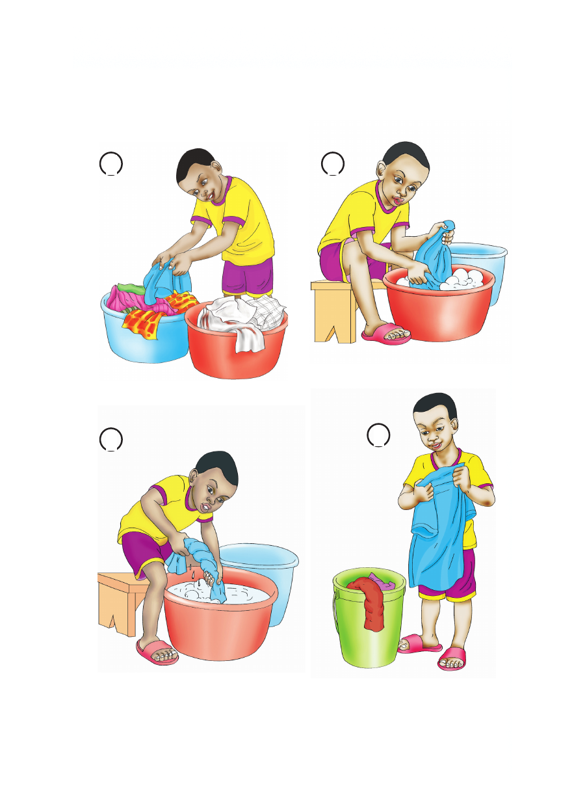

Hatua za kufua nguo
Angalia picha namba 1 hadi 5, kisha fanya zoezi la 6.
1 2
3 4
Hatua za kufua nguo Angalia picha namba 1 hadi 5, kisha fanya zoezi la 6. 1 2 4

Hatua za kufua nguo
Angalia picha namba 1 hadi 5, kisha fanya zoezi la 6.
1 2
3 4